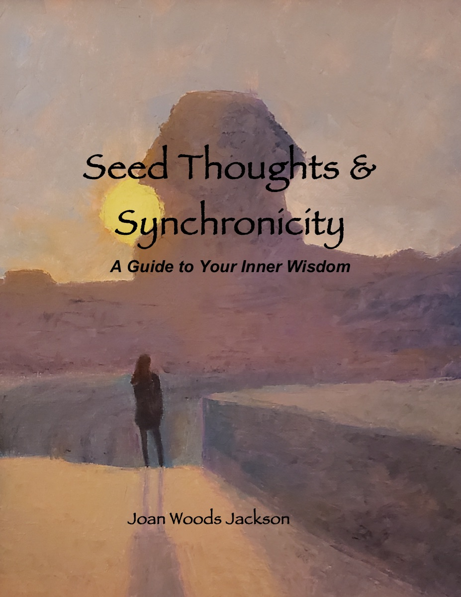

About the Book
This is a guide to help you access your own inner wisdom — the quiet knowing that lives beneath the noise of daily life. Through seed thoughts, reflections, and moments of synchronicity, Joan invites you to explore the deeper currents that shape your path.
A seed thought is a small, potent idea planted in the fertile ground of your awareness. Given attention, it grows into insight, clarity, and sometimes transformation. This book offers a collection of such seeds — drawn from decades of contemplation, mystical experience, and the study of consciousness.
Part poetry, part meditation, part guidebook, Seed Thoughts & Synchronicity is for anyone who senses there is more to life than meets the eye. It speaks to the seeker in all of us — the part that notices meaningful coincidences, follows intuitive nudges, and trusts the unfolding of a larger story.
Whether you are new to the inner journey or have walked this path for years, these pages offer companionship, encouragement, and a reminder: your inner wisdom has been waiting for you all along.
About Joan
Joan Jackson is a mystic, poet, and lifelong student of the inner world. For over five decades, she has explored the territories of consciousness, intuition, and the meaningful coincidences that Carl Jung called synchronicity.
Her journey has taken her through the study of meditation, metaphysics, and the perennial wisdom traditions that connect East and West. Along the way, she discovered that the deepest truths are not found in books alone — they arise in the quiet moments between thoughts, in the patterns that emerge when we pay attention to our lives.
Joan began writing seed thoughts as a personal practice — brief reflections meant to plant ideas in the subconscious and let them bloom over time. Friends and fellow seekers encouraged her to share them more widely, and Seed Thoughts & Synchronicity is the result of that encouragement.
Joan lives with a deep appreciation for the mystery of life and a belief that each of us carries an inner compass pointing toward wisdom, purpose, and connection. This book is her invitation to trust that compass.
Get in Touch
Joan would love to hear from you — whether you have a question about the book, want to share your own experience with synchronicity, or simply want to say hello.
jacksonjo@aol.com